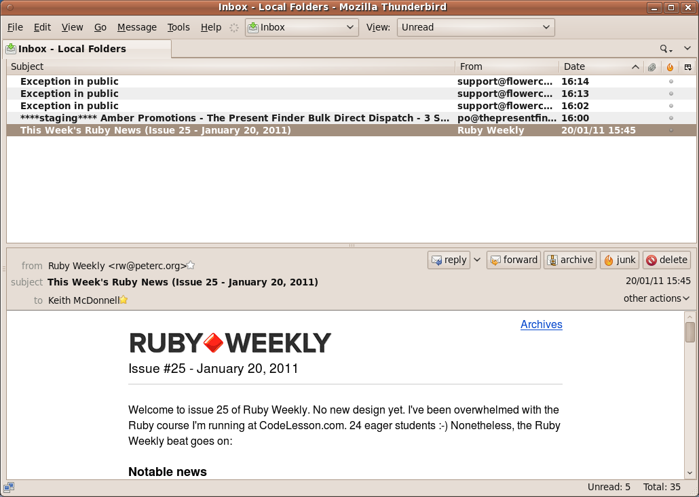

Start with a clean slate
- Triage: move all mail to an archive folder
- Turn off notifications
- View unread email only
- Hide the side bar
Here’s my inbox …

How to process your email
This is the easy part! When your check your new email, all you have to do is delete OR reply immediately. Learn to love those keys (delete & CTRL + R). See the next section for how to reply efficently.
I only keep reciepts, airline tickets etc. Everything else is deleted. If you absolutely must keep hold of an email — just archive it. You must keep your inbox lean & clean.
Very occasionally, I’ll tag an email as todo or important. They usually sit in my inbox for a few days until I reply.
If you find yourself getting unwanted mail, either unsubscribe or set up a mail filter to delete it.
Replying & composing messages
Press CTRL + R to reply then delete the message from your inbox. Don’t worry, you’ll have the message in your reply anyway.
Your email messages should be no more than five paragraphs. Each paragraph should have one clear point only. Even still, I find it takes me time to write a concise, clear message.
If you find yourself typing the same text over again, install the quick text plugin. It’ll save you lots of keystrokes. You can even set up hot keys for each text snippet. I use it for:
- boiler plate text like Hi {name}, Regards, Keith.
- replying to job applications
- sending invoices
The key to not getting sidetracked by your inbox is to de-couple sending and reading. You should NOT open your inbox to send a message.
You can open a new email thusly: thunderbird -compose.
Here are some appliication lauchers to put new email at your finger tips:
| Operating System | Hot key |
|---|---|
| gnome | alt + F2 |
| windows | windows key + R |
| os X | alt + space |
So, if you’re working away on something and you need to shoot off an email, just fire up your app launcher, type thunderbird -compose and then get back to work.
Lastly, only send essential emails. You know that opinion someone asked or that funny link on youtube – just hit delete. It’s not important … really it’s not. If you send less messages, you’ll receive less mail.
Decide when to check your email
Lastly, the really hard part. This, like quitting an addiction will take time, patience and many attempts. You WILL find yourself sneakily checking for new mail. Just try and pick times that work for you and stick with it.
Choose when to check your messages. I check mine at 11:00 & 15:00, Monday to Friday.
You might need to let people know that you’ll only be chekcing your mail periodically. You can create an auto-responder or add a signature to your email stating when you intend to check your mail.
If possible don’t check first thing in the morning. If you absolutely must, just open & scan for emergencies or something that can’t wait until your first scheduled check.
Read more about Inbox Zero .